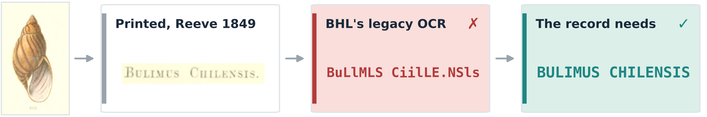
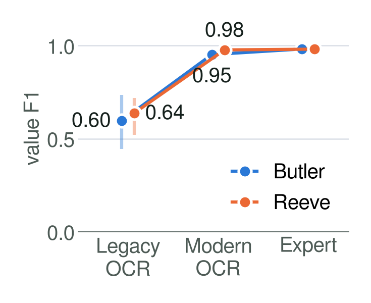
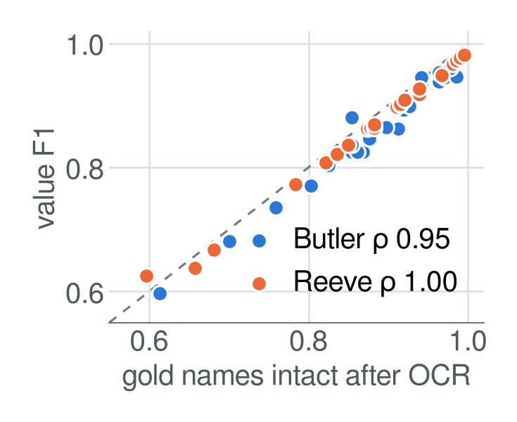
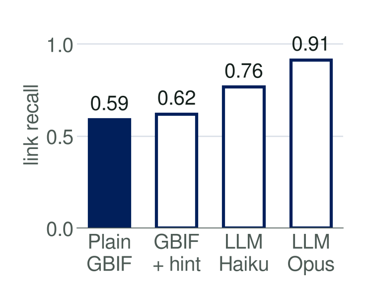
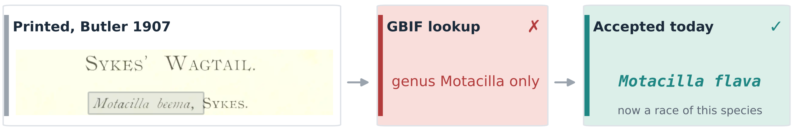

01 · Motivation
A record is only as trustworthy as its weakest step
BHL holds about 64 million scanned pages. Which step should the next unit of effort go to?

Highlighted: where this pilot found the largest losses.
02 · Methodology
Hold the page constant, vary only the text, and let the model point rather than write
Frozen (hashes in FREEZE.json) before the test pages ran; test outputs sealed until then.
Design borrowed from Lei, Docherty & Cooper (2024, Digital Discovery; micrographs in materials papers): label before seeing model output, compare with keyword baselines. Here applied to a different question.
03 · Results
OCR is the first loss; after it, linking and scope
A · Same 16 pages, three texts pre-reg.

Legacy OCR: right place, misread text (lenient F1 0.93–0.97).
B · 24 OCR versions exploratory

Page error rate does not predict it (ρ −0.11 / −0.61).
C · Linking bird names to GBIF

Plain lookup pre-reg.: 14 of 34 lost.
On the page · a fluent OCR error looks like a real name

Two letters barely move the page error rate; only a check on the names catches it.
On the page · read correctly, still not linked

The name changed since 1907; the plain lookup stops at the genus.
The same chain in materials papers (an analogy for this audience, not tested here)
Read. OCR drops subscripts and units: Fe₂O₃ becomes Fe2O3, µm becomes um.
Link. "TiO₂" without its phase is like a genus without its species: right formula, wrong entry.
Scope. A value measured in the paper is not the same datum as one cited from another paper.
04 · Protocol and Data
5 pre-registered hypotheses · verdicts against thresholds set in advance · 95% page-bootstrap intervals, per book
Follow-ups decided after unsealing are logged as deviations and need a fresh test.
Data (all public)
| 7 | Butler 1907, birds · test pages |
| 9 | Reeve 1849, shells · test pages |
| 8 | PCAS 1898, botany · scans |
| 682 | Whole books · 60 spot-checked |
| 6 | 本草綱目, classical Chinese · dev pilot |
Models
Claude Opus 5.5 and Gemini 4 Carbon (pre-registered); Haiku, Sonnet 5.5 and Fable 5.2 (exploratory); gnfinder + regex baseline.
The extraction model mattered little: on modern OCR all four Claude models reached value F1 0.93–0.96 (Butler) and 0.95–0.98 (Reeve); on legacy OCR all fell to 0.58–0.65.
API spend about $56 in total. The real cost was labelling.
05 · Same accuracy is not the same evidence
Three routes reach similar F1; only one leaves a trail an auditor can check mechanically
| Route | Value F1 | Value comes from | Auditor must |
|---|---|---|---|
| Modern OCR + quote-checked extraction | 0.95 / 0.98 | sliced from the OCR text | open the scan only for OCR misreads |
| Legacy OCR + LLM repair | 0.96 / 0.91 | the model's reading; ~30% changed | check every repair (1 in 12 wrong) |
| Page image only | 0.96 / 0.98 | the model's transcription | find each value by hand; boxes hit the word 67% / 40% |
Requiring a verbatim quote changed no accuracy number pre-registered: both arms took values from the source by code. Evidence buys traceability and lower audit cost, which accuracy does not measure.
06 · Conclusion
- Where to spend. Accept OCR on name survival, per material; fund entity resolution; write the scope; review by sampling, with evidence. Not a bigger extraction model.
- Scope and review. Agreement is not correctness (50 / 75 errors inside it on legacy OCR); five scope conventions move botany F1 0.83 → 0.94.
- Limits and next. Two English books and 8 botany pages; a 本草綱目 pilot (6 dev pages) repeats the pattern, and models also normalise variant characters; its test set is frozen. Layouts and handwriting untested. Training follow-up: examples taught a small model to repair OCR (4% → 40%); RL taught it to copy.
Connect & Explore
A map of AI4S people, research,
companies and capital, read at source.
 ai4s.fyi
ai4s.fyi LinkedIn
LinkedInDekun (Gloria) Sun on LinkedIn · @gloria_sun on X